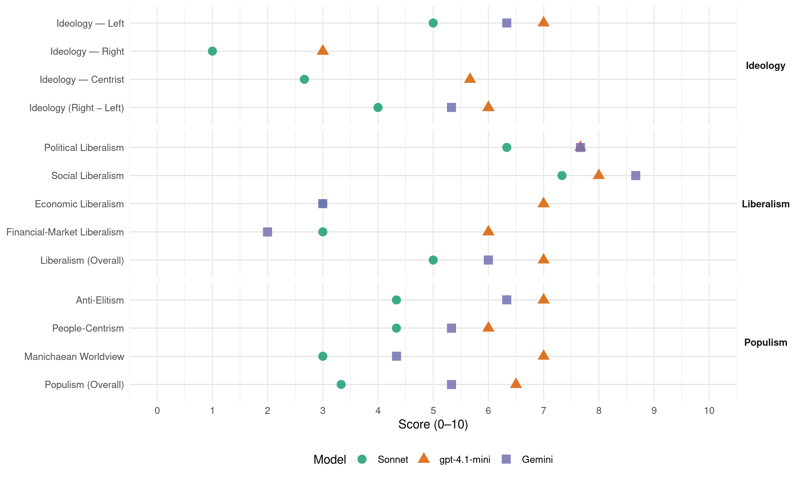

PAN (Portugal, 2015)
manifesto_id 35120_201510
Get full text: This site shows derived annotations and short verbatim quotes only. The full manifesto text is © Manifesto Project / WZB — obtain it via manifesto-project.wzb.eu using the manifesto_id above.
Headline scores
| Dimension | Sonnet | gpt-4.1-mini | Gemini |
|---|---|---|---|
| Populism (Overall) | 3.3 | 6.5 | 5.3 |
| Anti-Elitism | 4.3 | 7.0 | 6.3 |
| People-Centrism | 4.3 | 6.0 | 5.3 |
| Manichaean Worldview | 3.0 | 7.0 | 4.3 |
| Ideology (Right − Left) | 4.0 | 6.0 | 5.3 |
| Liberalism (Overall) | 5.0 | 7.0 | 6.0 |
| Political Liberalism | 6.3 | 7.7 | 7.7 |
| Social Liberalism | 7.3 | 8.0 | 8.7 |
| Economic Liberalism | 3.0 | 7.0 | 3.0 |
| Financial-Market Liberalism | 3.0 | 6.0 | 2.0 |
Evidence per dimension
Economic Liberalism
Gemini · score 3.0 · verified · chunk 1
“privatizaçao de sectores estruturais”
meio milháo de portuguesas e portugueses obrigadas/os a emigrar náo consegue disfargar os elevados níveis de desemprego; a privatizaçao de sectores estruturais náo defende o estado
Gemini · score 3.0 · verified · chunk 2
“proibindo a inserção de sal e açúcar”
com a alteração da legislação sobre a alimentação para bebés, proibindo a inserção de sal e açúcar em toda a alimentação comercializada
Gemini · score 3.0 · verified · chunk 3
“Rejeitar a Parceria Transatlántica de Comércio e Investimento”
125. Rejeitar a Parceria Transatlántica de Comércio e Investimento [TTIP] Porqué? A Parceria
gpt-4.1-mini · score 7.0 · verified · chunk 1
“a privatizaçao de sectores estruturais náo defende o estado nem as/os cidadás/áos”
…Os mecanismos fiscais são cada vez mais agressivos; as pessoas em situaçao de pobreza aumentaram e o meio milháo de portuguesas e portugueses obrigadas/os a emigrar náo consegue disfargar os elevados níveis de desemprego; a privatizaçao de sectores estruturais náo defende o estado nem as/os cidadás/áos; na educaçao o desinvestimento acentua-se; o Serviço Nacional de Saúde revela cada vez mais debilidades…
gpt-4.1-mini · score 7.0 · verified · chunk 2
“reforma do sistema fiscal”
…Pelo menos 15% dos trabalhadores portugueses vivem em situação de pobreza ou no limiar da pobreza, pelo que é essencial o aumento do salário mínimo nacional. O financiamento deste aumento do Salário Mínimo Nacional (SMN) será conseguido através da reforma do sistema fiscal…
gpt-4.1-mini · score 7.0 · verified · chunk 3
“Promover e participar em lóbis europeus e mundiais para o fim das off-shores”
…Promover e participar em lóbis europeus e mundiais para o fim das off-shores Porquê? Sabe-se actualmente que as off-shores são locais onde é depositado capital que foge aos circuitos habituais de taxação fiscal, contribuindo de modo significativo para gerar desigualdades na distribuição da riqueza.
Sonnet · score 3.0 · verified · chunk 1
“a privatizaçao de sectores estruturais náo defende”
a privatizaçao de sectores estruturais náo defende o estado nem as/os cidadás/áos; na educaçao o desinvestimento acentua-se
Sonnet · score 4.0 · mixed · chunk 2
“incentivos e penalizações fiscais adequadas”
levar os agentes económicos a investir nas alternativas com os incentivos e penalizações fiscais adequadas
Sonnet · score 3.0 · verified · chunk 3
“Rejeitar a Parceria Transatlântica de Comércio”
125. Rejeitar a Parceria Transatlântica de Comércio e Investimento [TTIP]
Financial-Market Liberalism
Gemini · score 2.0 · verified · chunk 2
“bancos solidários promove outro tipo de ética”
87. Bancos solidários Porqué? A banca comercial tem nos seus pressupostos o lucro… A existência de bancos solidários promove outro tipo de ética relacional
Gemini · score 2.0 · verified · chunk 3
“imposto global sobre as transacções financeiras”
mundiais para a criação do imposto global sobre as transacções financeiras Porqué? A acumulação
gpt-4.1-mini · score 6.0 · verified · chunk 2
“fomentação de bancos solidários”
…Pretende-se com a fomentação de bancos solidários da existência de concorrência face à banca comercial tal como existe actualmente. Pretende-se que outras actividades na sociedade sejam promovidas e fomentadas, sem ter subjacentes a lógica do lucro e do retorno económico mais imediato…
gpt-4.1-mini · score 6.0 · verified · chunk 3
“Rever a regulação bancária no sentido de gradualmente afastar o sistema bancário de reservas fraccionárias”
…Rever a regulação bancária no sentido de gradualmente afastar o sistema bancário de reservas fraccionárias Porquê? O Banco Central reganha o monopólio monetário e, em caso de crises financeiras ou bancárias, os depositantes estão totalmente garantidos face a riscos sistémicos.
Sonnet · score 3.0 · verified · chunk 2
“banca comercial tem nos seus pressupostos o lucro”
A banca comercial tem nos seus pressupostos o lucro sobre todas a actividades que desenvolve, seja na concessão de crédito ou na prestação de serviços
Sonnet · score 3.0 · verified · chunk 3
“imposto global sobre as transacções financeiras”
lóbis europeus e mundiais para a criação do imposto global sobre as transacções financeiras
Political Liberalism
Gemini · score 7.0 · verified · chunk 1
“credibilizar a democracia”
Novas políticas para credibilizar a democracia, devolver a felicidade e o bem-estar às pessoas
Gemini · score 8.0 · verified · chunk 2
“estado de direito democrático e dos direitos”
supremacia dos mercados financeiros sobre o estado de direito democrático e dos direitos fundamentais das/os cidadãs/ãos.
Gemini · score 8.0 · verified · chunk 3
“Garantir a democracia e a auto determinação”
Para qué? Garantir a democracia e a auto determinação de indivíduos e nações
gpt-4.1-mini · score 7.0 · verified · chunk 1
“Novas políticas para credibilizar a democracia”
MANIFESTO ELEITORAL O PAN propõe semear ideias para os próximos quatro anos que visam alterar consciências e contribuir para a transformaçao da sociedade, de acordo com valores éticos e ecológicos fundamentais . Novas políticas para credibilizar a democracia, devolver a felicidade e o bem-estar às pessoas , proteger a nossa casa comum - o ecossistema…
gpt-4.1-mini · score 8.0 · verified · chunk 2
“revisão e alteração dos documentos legislativos, regulamentos e procedimentos”
…Através da revisão e alteração dos documentos legislativos, regulamentos e procedimentos actualmente em vigor. 82. Incluir a identidade e a expressão de género no artigo 13º da Constituição da República Portuguesa…
gpt-4.1-mini · score 8.0 · verified · chunk 3
“Garantir a democracia e a auto determinação de indivíduos e nações”
…Garantir a democracia e a auto determinação de indivíduos e nações em detrimento de uma crescente corporativização da sociedade. Garantir que as liberdades e direitos Europeus não sejam diminuídos com standards economicistas.
Sonnet · score 6.0 · verified · chunk 1
“credibilizar a democracia”
Novas políticas para credibilizar a democracia, devolver a felicidade e o bem-estar às pessoas, proteger a nossa casa comum
Sonnet · score 6.0 · verified · chunk 2
“estado de direito democrático e dos direitos fundamentais”
assistimos à crescente supremacia dos mercados financeiros sobre o estado de direito democrático e dos direitos fundamentais das/os cidadãs/ãos
Sonnet · score 7.0 · verified · chunk 3
“sistemas de democracia participativa”
Implementar sistemas de democracia participativa em todos os níveis de governação
Liberalism (Overall)
Gemini · score 6.0 · verified · chunk 1
“credibilizar a democracia”
Novas políticas para credibilizar a democracia, devolver a felicidade e o bem-estar às pessoas
Gemini · score 6.0 · verified · chunk 2
“estado de direito democrático e dos direitos”
supremacia dos mercados financeiros sobre o estado de direito democrático e dos direitos fundamentais das/os cidadãs/ãos.
Gemini · score 6.0 · verified · chunk 3
“Garantir a democracia e a auto determinação”
Para qué? Garantir a democracia e a auto determinação de indivíduos e nações
gpt-4.1-mini · score 7.0 · verified · chunk 1
“Novas políticas para credibilizar a democracia”
MANIFESTO ELEITORAL O PAN propõe semear ideias para os próximos quatro anos que visam alterar consciências e contribuir para a transformaçao da sociedade, de acordo com valores éticos e ecológicos fundamentais . Novas políticas para credibilizar a democracia, devolver a felicidade e o bem-estar às pessoas , proteger a nossa casa comum - o ecossistema…
gpt-4.1-mini · score 7.0 · verified · chunk 2
“reforma do sistema fiscal”
…Pelo menos 15% dos trabalhadores portugueses vivem em situação de pobreza ou no limiar da pobreza, pelo que é essencial o aumento do salário mínimo nacional. O financiamento deste aumento do Salário Mínimo Nacional (SMN) será conseguido através da reforma do sistema fiscal…
gpt-4.1-mini · score 7.0 · verified · chunk 3
“Garantir a democracia e a auto determinação de indivíduos e nações”
…Garantir a democracia e a auto determinação de indivíduos e nações em detrimento de uma crescente corporativização da sociedade. Garantir que as liberdades e direitos Europeus não sejam diminuídos com standards economicistas.
Sonnet · score 5.0 · verified · chunk 1
“credibilizar a democracia”
Novas políticas para credibilizar a democracia, devolver a felicidade e o bem-estar às pessoas, proteger a nossa casa comum
Sonnet · score 5.0 · verified · chunk 2
“identidade e expressão de género no artigo 13º”
Incluir a identidade e a expressão de género no artigo 13º da Constituição da República Portuguesa
Sonnet · score 5.0 · verified · chunk 3
“sistemas de democracia participativa”
Implementar sistemas de democracia participativa em todos os níveis de governação
Anti-Elitism
Gemini · score 7.0 · verified · chunk 1
“captura do estado por interesses privados”
garantia de uma alternativa ética ao momento que vivemos: de imposigões ideológicas, de logros políticos, da captura do estado por interesses privados, do esgotar de um projecto
Gemini · score 6.0 · verified · chunk 2
“supremacia dos mercados financeiros sobre o estado”
inverta a atual situação, em que assistimos à crescente supremacia dos mercados financeiros sobre o estado de direito democrático
Gemini · score 6.0 · verified · chunk 3
“beneficie directamente as populações e náo interesses elitistas”
gestáo financeira e económica de um novo modelo que beneficie directamente as populações e náo interesses elitistas. Esta era tecnológica
gpt-4.1-mini · score 7.0 · verified · chunk 1
“da captura do estado por interesses privados”
…momento que vivemos: de imposigões ideológicas, de logros políticos, da captura do estado por interesses privados, do esgotar de um projecto civilizacional que tem o seu fundamento no antropocentrismo e na acumulaçao de riqueza. Nos últimos 4 anos, na esteira do que tem sido o caminho prosseguido pelos sucessivos governos, o nosso país continuou a cavar o fosso da ruína social. Os mecanismos fiscais são cada vez mais agressivos; as pessoas em situaçao de pobreza aumentaram…
gpt-4.1-mini · score 5.0 · mixed · chunk 2
“a crescente supremacia dos mercados financeiros sobre o estado de direito democrático”
…que inverta a atual situação, em que assistimos à crescente supremacia dos mercados financeiros sobre o estado de direito democrático e dos direitos fundamentais das/os cidadãs/ãos. Os níveis de pobreza e de desigualdade em Portugal são dos mais elevados da UE e da OCDE…
gpt-4.1-mini · score 7.0 · verified · chunk 3
“Garantir a democracia e a auto determinação de indivíduos e nações em detrimento de uma crescente corporativização da sociedade”
…Garantir a democracia e a auto determinação de indivíduos e nações em detrimento de uma crescente corporativização da sociedade. Garantir que as liberdades e direitos Europeus não sejam diminuídos com standards economicistas. Como? Estas medidas têm um caráter nacional mas sobretudo terão que ser geridos na esfera pública para que o apoio seja relevante de modo a alterarmos a norma Europeia de unilateralismo e secretismo.
Sonnet · score 4.0 · verified · chunk 1
“da captura do estado por interesses privados”
de imposigões ideológicas, de logros políticos, da captura do estado por interesses privados, do esgotar de um projecto civilizacional
Sonnet · score 5.0 · verified · chunk 2
“supremacia dos mercados financeiros sobre o estado de direito democrático”
assistimos à crescente supremacia dos mercados financeiros sobre o estado de direito democrático e dos direitos fundamentais das/os cidadãs/ãos
Sonnet · score 4.0 · verified · chunk 3
“interesses elitistas”
modelo que beneficie directamente as populações e não interesses elitistas. Esta era tecnológica onde
Ideology — Centrist
gpt-4.1-mini · score 6.0 · verified · chunk 1
“propostas políticas apresentadas. O PAN propõe uma visão e um caminho de sociedade”
…de um número cada vez maior de portugueses insatisfeitos e excluídos com as propostas políticas apresentadas. O PAN propõe uma visão e um caminho de sociedade que váo ao encontro das expectativas de muitas/os portuguesas/es, convidando todos os restantes a conhecer e reconhecerem-se nos ideais PAN. Apresenta-se a seguir um programa eleitoral com medidas integradoras e abrangentes…
gpt-4.1-mini · score 5.0 · verified · chunk 2
“envolvendo toda a sociedade neste que deverá ser um desígnio nacional”
…Envolvendo toda a sociedade neste que deverá ser um desígnio nacional: a reduçao dos níveis de pobreza e de desigualdade para níveis que dignifiquem Portugal no quadro das nagões; Instituindo o Rendimento Básico Incondicional…
gpt-4.1-mini · score 6.0 · verified · chunk 3
“Implementar sistemas de democracia participativa em todos os níveis de governação”
…Implementar sistemas de democracia participativa em todos os níveis de governação Porquê? Porque há um enorme alheamento da população e das forças actuantes em relação à governação, que é vista como responsabilidade exclusiva de umas/uns quantas/os eleitas/os para o efeito, de quatro em quatro anos. Porque para o PAN a democracia não se esgota nos actos eleitorais.
Sonnet · score 3.0 · verified · chunk 1
“Esta candidatura apresenta solugões credíveis, náo demagógicas”
Esta candidatura apresenta solugões credíveis, náo demagógicas, porventura audazes, mas que promovem a estabilidade e a harmonia a prazo
Sonnet · score 3.0 · verified · chunk 2
“vontade da esmagadora maioria das/os cidadãs/ãos”
a vontade da esmagadora maioria das/os cidadãs/ãos é a da coexistência pacífica entre povos e nações
Sonnet · score 2.0 · verified · chunk 3
“democracia não se esgota nos actos eleitorais”
Porque para o PAN a democracia não se esgota nos actos eleitorais. Para qué?
Ideology — Left
Gemini · score 6.0 · verified · chunk 1
“acumulaçao de riqueza”
projecto civilizacional que tem o seu fundamento no antropocentrismo e na acumulaçao de riqueza. Nos últimos 4 anos
Gemini · score 7.0 · verified · chunk 2
“políticas de austeridade aplicadas em Portugal conduziram”
As políticas de austeridade aplicadas em Portugal conduziram a um brutal empobrecimento de uma parte significativa da populaçao
Gemini · score 6.0 · verified · chunk 3
“financiar programas sociais de redução da pobreza e desigualdade”
novos escalões de IRS destinam-se a financiar programas sociais de redução da pobreza e desigualdade.
gpt-4.1-mini · score 8.0 · verified · chunk 1
“os mecanismos fiscais são cada vez mais agressivos; as pessoas em situaçao de pobreza aumentaram”
…Nos últimos 4 anos, na esteira do que tem sido o caminho prosseguido pelos sucessivos governos, o nosso país continuou a cavar o fosso da ruína social. Os mecanismos fiscais são cada vez mais agressivos; as pessoas em situaçao de pobreza aumentaram e o meio milháo de portuguesas e portugueses obrigadas/os a emigrar náo consegue disfargar os elevados níveis de desemprego; a privatizaçao de sectores estruturais náo defende o estado nem as/os cidadás/áos…
gpt-4.1-mini · score 6.0 · verified · chunk 2
“Instituindo o Rendimento Básico Incondicional”
…Envolvendo toda a sociedade neste que deverá ser um desígnio nacional: a reduçao dos níveis de pobreza e de desigualdade para níveis que dignifiquem Portugal no quadro das nagões; Instituindo o Rendimento Básico Incondicional; Reduzindo horários de trabalho…
gpt-4.1-mini · score 7.0 · verified · chunk 3
“Garantir a democracia e a auto determinação de indivíduos e nações em detrimento de uma crescente corporativização da sociedade”
…Garantir a democracia e a auto determinação de indivíduos e nações em detrimento de uma crescente corporativização da sociedade. Garantir que as liberdades e direitos Europeus não sejam diminuídos com standards economicistas. Como? Estas medidas têm um caráter nacional mas sobretudo terão que ser geridos na esfera pública para que o apoio seja relevante de modo a alterarmos a norma Europeia de unilateralismo e secretismo.
Sonnet · score 4.0 · verified · chunk 1
“a privatizaçao de sectores estruturais náo defende”
as pessoas em situaçao de pobreza aumentaram e o meio milháo de portuguesas e portugueses obrigadas/os a emigrar; a privatizaçao de sectores estruturais náo defende o estado nem as/os cidadás/áos
Sonnet · score 6.0 · verified · chunk 2
“erradicar os mecanismos originadores de pobreza e exclusão social”
é necessário erradicar os mecanismos originadores de pobreza e exclusão social, por uma questão de justiça, solidariedade e de liberdade das/os cidadãs/ãos
Sonnet · score 5.0 · verified · chunk 3
“distribuição justa de rendimento”
introduza o trinómio hierárquico escala sustentável, distribuição justa de rendimento e eficiente alocação económica
Ideology (Right − Left)
Gemini · score 5.0 · verified · chunk 1
“acumulaçao de riqueza”
projecto civilizacional que tem o seu fundamento no antropocentrismo e na acumulaçao de riqueza. Nos últimos 4 anos
Gemini · score 6.0 · verified · chunk 2
“políticas de austeridade aplicadas em Portugal conduziram”
As políticas de austeridade aplicadas em Portugal conduziram a um brutal empobrecimento de uma parte significativa da populaçao
Gemini · score 5.0 · verified · chunk 3
“financiar programas sociais de redução da pobreza e desigualdade”
novos escalões de IRS destinam-se a financiar programas sociais de redução da pobreza e desigualdade.
gpt-4.1-mini · score 7.0 · verified · chunk 1
“propostas políticas apresentadas. O PAN propõe uma visão e um caminho de sociedade”
…de um número cada vez maior de portugueses insatisfeitos e excluídos com as propostas políticas apresentadas. O PAN propõe uma visão e um caminho de sociedade que váo ao encontro das expectativas de muitas/os portuguesas/es, convidando todos os restantes a conhecer e reconhecerem-se nos ideais PAN. Apresenta-se a seguir um programa eleitoral com medidas integradoras e abrangentes…
gpt-4.1-mini · score 5.0 · verified · chunk 2
“Instituindo o Rendimento Básico Incondicional”
…Envolvendo toda a sociedade neste que deverá ser um desígnio nacional: a reduçao dos níveis de pobreza e de desigualdade para níveis que dignifiquem Portugal no quadro das nagões; Instituindo o Rendimento Básico Incondicional; Reduzindo horários de trabalho…
gpt-4.1-mini · score 6.0 · verified · chunk 3
“Garantir a democracia e a auto determinação de indivíduos e nações em detrimento de uma crescente corporativização da sociedade”
…Garantir a democracia e a auto determinação de indivíduos e nações em detrimento de uma crescente corporativização da sociedade. Garantir que as liberdades e direitos Europeus não sejam diminuídos com standards economicistas. Como? Estas medidas têm um caráter nacional mas sobretudo terão que ser geridos na esfera pública para que o apoio seja relevante de modo a alterarmos a norma Europeia de unilateralismo e secretismo.
Sonnet · score 3.0 · verified · chunk 1
“da captura do estado por interesses privados”
de imposigões ideológicas, de logros políticos, da captura do estado por interesses privados, do esgotar de um projecto civilizacional
Sonnet · score 5.0 · verified · chunk 2
“erradicar os mecanismos originadores de pobreza e exclusão social”
é necessário erradicar os mecanismos originadores de pobreza e exclusão social, por uma questão de justiça, solidariedade e de liberdade das/os cidadãs/ãos
Sonnet · score 4.0 · verified · chunk 3
“distribuição justa de rendimento”
introduza o trinómio hierárquico escala sustentável, distribuição justa de rendimento e eficiente alocação económica
Ideology — Right
gpt-4.1-mini · score 3.0 · verified · chunk 1
“discriminaçao em funçao do género e da orientaçao sexual e identidade de género foi acentuada”
…a degradaçao do serviço e dos horários da rede ferroviária é bem evidente; a discriminaçao em funçao do género e da orientaçao sexual e identidade de género foi acentuada e constitui ainda uma escura realidade; posiçao já esquecida – no entanto imagem incontornável do momento que se vive – Portugal é hoje um país sem um ministério dedicado à cultura…
Sonnet · score 1.0 · verified · chunk 2
“combater as vertentes nocivas da globalização”
É importante combater as vertentes nocivas da globalização e a superiorização de algumas nações perante outras
Sonnet · score 1.0 · verified · chunk 3
“soberania económica e financeira de Portugal”
Defender o interesse nacional e a soberania económica e financeira de Portugal, defendendo a população
Manichaean Worldview
Gemini · score 5.0 · verified · chunk 1
“garantia de uma alternativa ética”
promovem a estabilidade e a harmonia a prazo e que se constituem como garantia de uma alternativa ética ao momento que vivemos
Gemini · score 4.0 · verified · chunk 2
“encarado por este governo como um parasita”
o funcionário público tem sido encarado por este governo como um parasita do orçamento.
Gemini · score 4.0 · verified · chunk 3
“promiscuidade entre decisoras/es políticas/os e as entidades privadas”
tem-se assistido a alguma promiscuidade entre decisoras/es políticas/os e as entidades privadas, com trocas de cadeiras
gpt-4.1-mini · score 7.0 · verified · chunk 1
“de imposigões ideológicas, de logros políticos”
…momento que vivemos: de imposigões ideológicas, de logros políticos, da captura do estado por interesses privados, do esgotar de um projecto civilizacional que tem o seu fundamento no antropocentrismo e na acumulaçao de riqueza. Nos últimos 4 anos, na esteira do que tem sido o caminho prosseguido pelos sucessivos governos, o nosso país continuou a cavar o fosso da ruína social…
gpt-4.1-mini · score 4.0 · mixed · chunk 2
“violência é um crime contra a Humanidade, transversal a toda a sociedade”
…Esta violência é um crime contra a Humanidade, transversal a toda a sociedade e tem uma natureza estrutural, económica, social e cultural. Para quê? Para que todas as pessoas, independentemente do género…
gpt-4.1-mini · score 5.0 · mixed · chunk 3
“A corrupção corrói o funcionamento ético e íntegro dos governos”
…A corrupção corrói o funcionamento ético e íntegro dos governos e aparentemente representa uma importante fatia dos gastos do Estado; o aproveitamento do poder para enriquecer ludibriando a fé/confiança pública depositada nos governantes através dos processos eleitorais; os enormes ganhos destas actividades permitem uma infiltração em todos os sectores do estado; Em Portugal, à semelhança do que acontece noutros países, é possível verificar um círculo vicioso de corrupção nas esferas privada e pública.
Sonnet · score 3.0 · verified · chunk 1
“logros políticos, da captura do estado”
de imposigões ideológicas, de logros políticos, da captura do estado por interesses privados, do esgotar de um projecto civilizacional
Sonnet · score 3.0 · verified · chunk 2
“modelo assistencialista, promovido pelos sucessivos governos”
Este actual modelo assistencialista, promovido pelos sucessivos governos, que transferem para organizações privadas a tarefa essencial do estado
Sonnet · score 3.0 · verified · chunk 3
“corporativização da sociedade”
Garantir a democracia e a auto determinação de indivíduos e nações em detrimento de uma crescente corporativização da sociedade
People-Centrism
Gemini · score 6.0 · verified · chunk 1
“devolver a felicidade e o bem-estar às pessoas”
Novas políticas para credibilizar a democracia, devolver a felicidade e o bem-estar às pessoas , proteger a nossa casa comum
Gemini · score 5.0 · verified · chunk 2
“detida exclusivamente pelas/os utentes-cidadãs/ãos”
Criar uma empresa que trate da captação, distribuição e tratamento de água por bacia hidrográfica detida exclusivamente pelas/os utentes-cidadãs/ãos, para as/os cidadãs/ãos
Gemini · score 5.0 · verified · chunk 3
“sistema de mobilidade virado para as pessoas”
obtenção de um sistema de mobilidade virado para as pessoas, ao nível da segurança
gpt-4.1-mini · score 6.0 · verified · chunk 1
“devolver a felicidade e o bem-estar às pessoas”
…Novas políticas para credibilizar a democracia, devolver a felicidade e o bem-estar às pessoas , proteger a nossa casa comum - o ecossistema, e dignificar moral e juridicamente a vida e a existéncia dos animais que connosco partilham o planeta: estes são os desafios que propomos. Esta candidatura apresenta solugões credíveis, náo demagógicas…
gpt-4.1-mini · score 4.0 · mixed · chunk 2
“envolvendo toda a sociedade neste que deverá ser um desígnio nacional”
…Envolvendo toda a sociedade neste que deverá ser um desígnio nacional: a reduçao dos níveis de pobreza e de desigualdade para níveis que dignifiquem Portugal no quadro das nagões; Instituindo o Rendimento Básico Incondicional…
gpt-4.1-mini · score 6.0 · verified · chunk 3
“Para que a todas/os seja assegurado o direito de aceder à justiça”
…Para que a todas/os seja assegurado o direito de aceder à justiça. Como? Através da alteração dos critérios de avaliação económica previsto no artigo 8.º da Lei n.º 34/2004, de 29 de Julho, tornando a lei mais flexível.
Sonnet · score 4.0 · verified · chunk 1
“devolver a felicidade e o bem-estar às pessoas”
Novas políticas para credibilizar a democracia, devolver a felicidade e o bem-estar às pessoas, proteger a nossa casa comum
Sonnet · score 5.0 · verified · chunk 2
“as medidas políticas devem ir ao encontro das vontades das populações”
As medidas políticas devem ir ao encontro das vontades das populações e, neste caso, a vontade da esmagadora maioria das/os cidadãs/ãos é a da coexistência pacífica
Sonnet · score 4.0 · verified · chunk 3
“beneficie directamente as populações”
gestão financeira e económica de um novo modelo que beneficie directamente as populações e não interesses elitistas
Populism (Overall)
Gemini · score 6.0 · verified · chunk 1
“captura do estado por interesses privados”
garantia de uma alternativa ética ao momento que vivemos: de imposigões ideológicas, de logros políticos, da captura do estado por interesses privados, do esgotar de um projecto
Gemini · score 5.0 · verified · chunk 2
“supremacia dos mercados financeiros sobre o estado”
inverta a atual situação, em que assistimos à crescente supremacia dos mercados financeiros sobre o estado de direito democrático
Gemini · score 5.0 · verified · chunk 3
“beneficie directamente as populações e náo interesses elitistas”
gestáo financeira e económica de um novo modelo que beneficie directamente as populações e náo interesses elitistas. Esta era tecnológica
gpt-4.1-mini · score 7.0 · verified · chunk 1
“de imposigões ideológicas, de logros políticos, da captura do estado por interesses privados”
…momento que vivemos: de imposigões ideológicas, de logros políticos, da captura do estado por interesses privados, do esgotar de um projecto civilizacional que tem o seu fundamento no antropocentrismo e na acumulaçao de riqueza. Nos últimos 4 anos, na esteira do que tem sido o caminho prosseguido pelos sucessivos governos, o nosso país continuou a cavar o fosso da ruína social…
gpt-4.1-mini · score 4.0 · mixed · chunk 2
“a crescente supremacia dos mercados financeiros sobre o estado de direito democrático”
…que inverta a atual situação, em que assistimos à crescente supremacia dos mercados financeiros sobre o estado de direito democrático e dos direitos fundamentais das/os cidadãs/ãos. Os níveis de pobreza e de desigualdade em Portugal são dos mais elevados da UE e da OCDE…
gpt-4.1-mini · score 6.0 · verified · chunk 3
“Garantir a democracia e a auto determinação de indivíduos e nações em detrimento de uma crescente corporativização da sociedade”
…Garantir a democracia e a auto determinação de indivíduos e nações em detrimento de uma crescente corporativização da sociedade. Garantir que as liberdades e direitos Europeus não sejam diminuídos com standards economicistas. Como? Estas medidas têm um caráter nacional mas sobretudo terão que ser geridos na esfera pública para que o apoio seja relevante de modo a alterarmos a norma Europeia de unilateralismo e secretismo.
Sonnet · score 3.0 · verified · chunk 1
“da captura do estado por interesses privados”
de imposigões ideológicas, de logros políticos, da captura do estado por interesses privados, do esgotar de um projecto civilizacional
Sonnet · score 4.0 · verified · chunk 2
“supremacia dos mercados financeiros sobre o estado de direito democrático”
assistimos à crescente supremacia dos mercados financeiros sobre o estado de direito democrático e dos direitos fundamentais das/os cidadãs/ãos
Sonnet · score 3.0 · verified · chunk 3
“interesses elitistas”
modelo que beneficie directamente as populações e não interesses elitistas
Social Liberalism